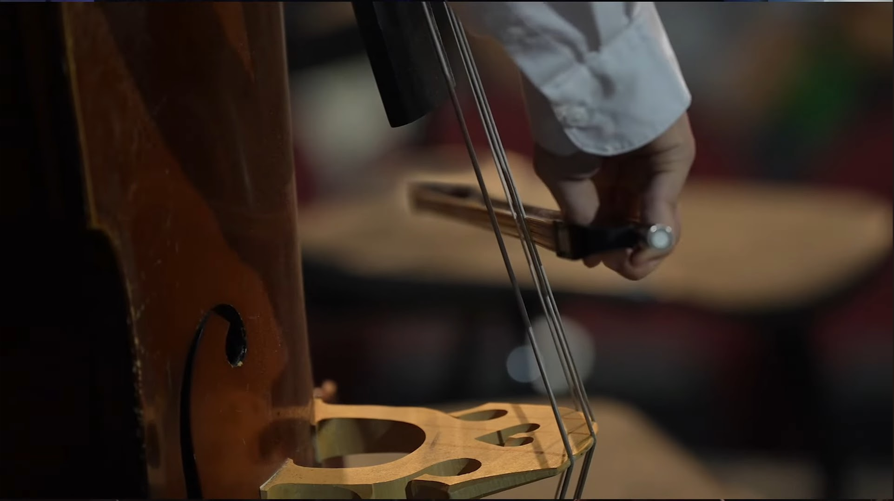
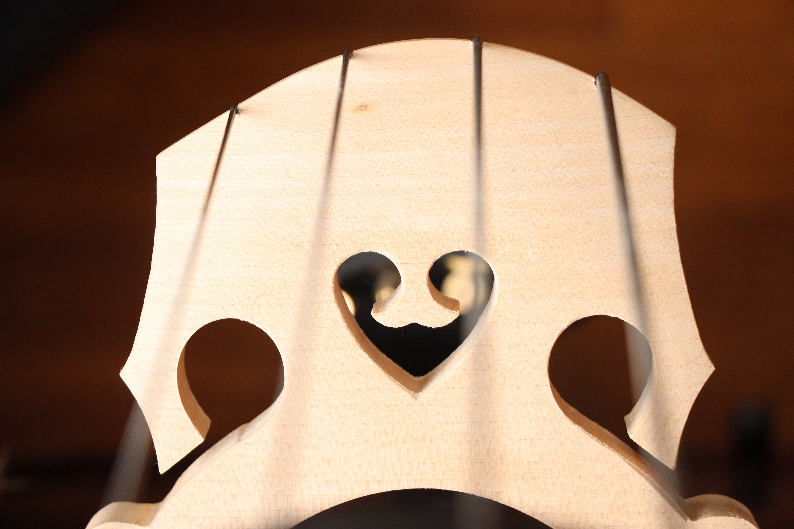
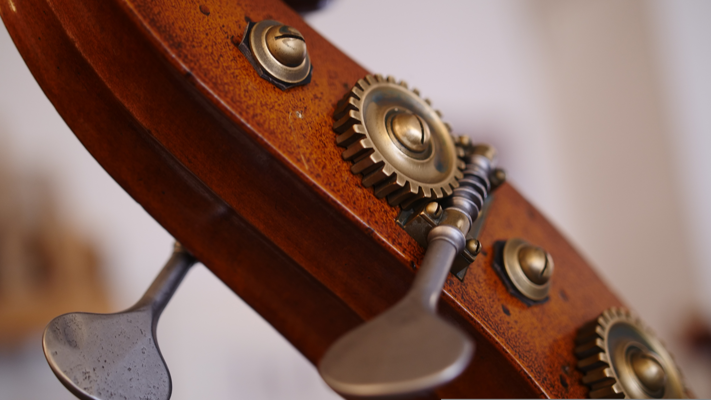

The Double Bass: A Brief Summary
The double bass (also reffered to as the 'upright bass', 'string bass', 'contrabass', 'acoustic bass', or occasionally 'bass fiddle'), is a stringed instrument, belonging to the same family as the violin, viola, and cello. Double basses most frequently have 4 strings, but may sometimes have more.
The double bass plays in the lower register, giving music that sound that makes it feel full. It is most frequently heard in classical, jazz, bluegrass, and blues genres.